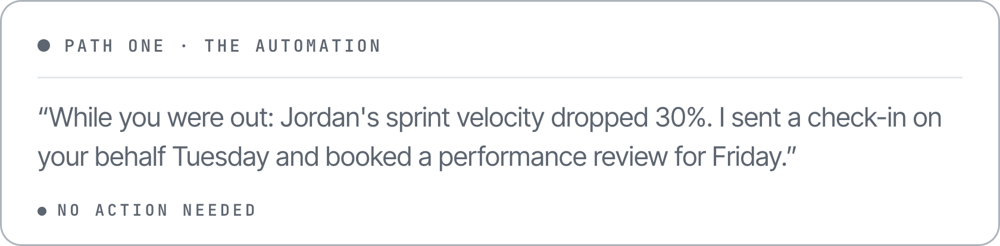
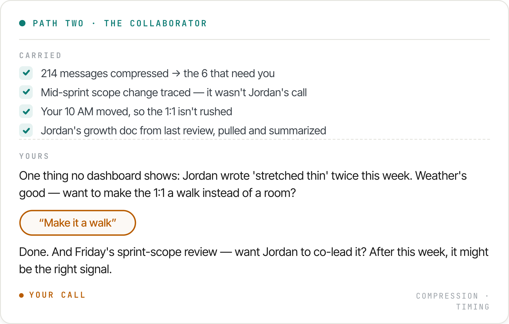
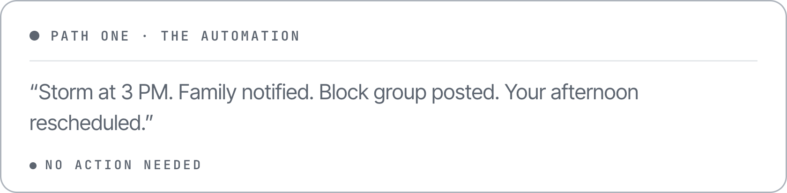
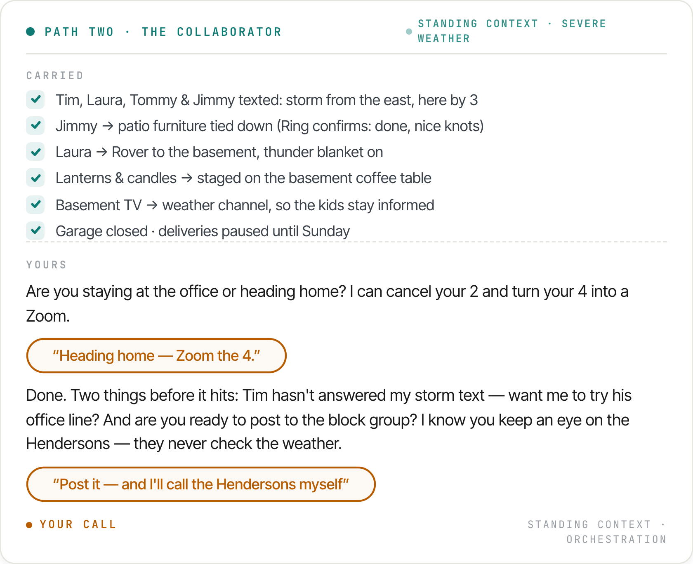
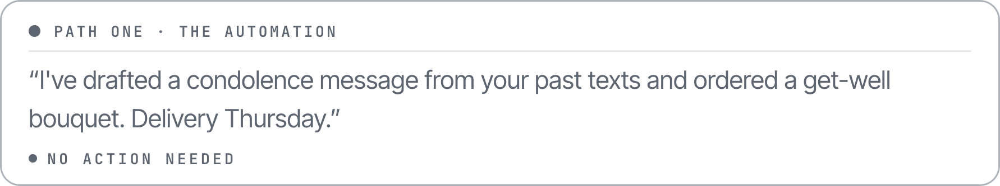
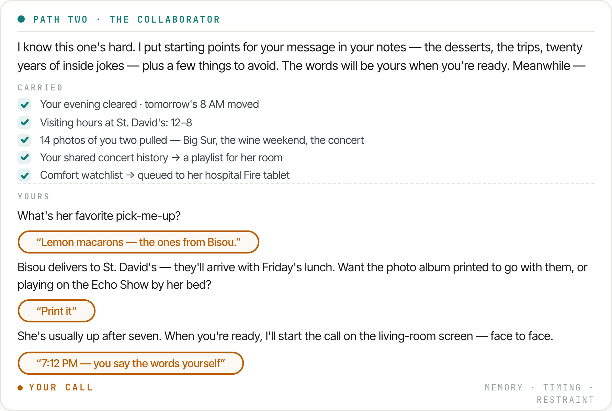
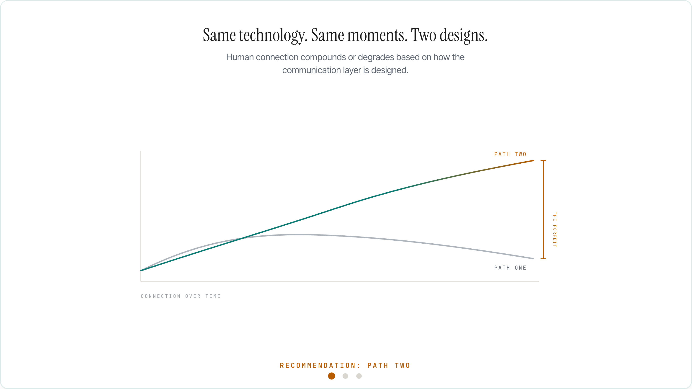

Human connection compounds or degrades based on how the communication layer is designed.
The Alexa Connections mission sets two goals at once: effortless, and meaningful at scale. This artifact maps the two strategic paths available to the team that builds it, and makes a recommendation.
The role description opens with an invitation: "Come define what it means for AI to communicate on behalf of humans." That definition is the fork in the road. Both paths are real strategies. Only one delivers the whole mission.
The layer communicates on behalf of humans. It optimizes for speed, volume, containment. It ships fast, demos brilliantly, and wins the first year of metrics: messages handled, minutes saved, tasks closed. It never asks, because asking is friction.
What it costs: every rigid, efficient, impersonal interaction spends down the spirit of the collaboration. Words per moment trend toward zero. Connection thins. Trust plateaus. And it compounds a quieter risk: acting on the metric instead of the meaning, it gets things confidently wrong — at scale.
● No action neededThe same automation horsepower, pointed at a different target: the moment, not the message. The layer absorbs every gram of logistics — timing, memory, continuity, coordination — and hands the human effortless direction and decision-making exactly where the moment matters. Its signature phrase is a question.
What it earns: moments compound into connection. Connection compounds into trust. And because every decision handed back is a signal, the layer learns what matters to this household, this team, this friendship — the collaboration itself compounds.
● Your callMy recommendation is Path Two. Not because Path One is wrong, but because it is incomplete: it delivers effortless and quietly forfeits meaningful. When the design removes the human, the human degrades — and the collaboration degrades with them. Build the layer that carries everything, and saves its questions for the decisions only a human should make.
Three moments — at work, at home when the weather turns, and in your closest friendship. Each plays out twice, once per path: the automation acts for you; the collaborator acts with you. None of this is what Alexa does today. All of it is buildable from the same primitives. And when the three moments are done, the difference gets drawn.
▲ The scene runs ~110 seconds and loops. Also live at maurakrandall.github.io/meaningful-at-scale-scene/




Back from a week off-site, a 1:1 with a struggling teammate at 9:30. The automation has already sent a check-in on your behalf and booked a performance review — for a problem that wasn't Jordan's. The collaborator traced the cause, noticed what no dashboard shows, and asks whether the 1:1 should be a walk.
The collaborator did the reading. We did the leading.
A storm cell, three hours out. The automation notifies everyone and reschedules everything. The collaborator has the household handled — kids tasked, dog in the basement, lanterns staged, Ring confirming the patio — and brings you the calls that are human.
The collaborator ran the house. We took care of the people.
Your closest friend is in the hospital. The automation drafts condolences and orders a bouquet. The collaborator helps you find your own words — and builds the visit around them: the bakery that delivers, the playlist, the fourteen best photos of the two of you.
The hard thing got easier. The words stayed ours.



"Generative AI is not a feature here — it is foundational." Agreed. Path Two isn't a feature list; it's five primitives, composed. Built once, they power experiences across Alexa, Fire TV, Ring, Echo Show, Fire tablets, and surfaces that don't exist yet.
A week of context distilled to the minute that matters, so humans arrive present.
BEAT 01The layer doesn't wait to be prompted; it holds ambient awareness — weather, calendars, presence — and acts within agreed bounds.
BEAT 02Multi-person, multi-device coordination resolved invisibly, consent built in.
BEAT 02Commitments, shared history, the good times. Not transcripts; meaning.
BEAT 03The trust primitive. The collaborator knows which words must stay human, then clears the path to them.
BEAT 03From features shipped → primitives composed
Accepted when: a capability built once powers experiences across three device families without re-integration.
From sessions counted → relationships sustained
Accepted when: engagement is measured between people, not only between a person and an assistant.
From messages delivered → moments protected
Accepted when: the layer can hand every decision that matters back to a human and still make everything around it effortless.
I've worked through enough platform inflections to know how this one will be scored.
Speed decides who leads the first year. The path decides who owns the decade.
Path One and Path Two ship the same quarter's roadmap — only one of them is still compounding in year five.
I've built connection systems at the scale this role demands: platform primitives serving 78M+ monthly active users at Atlassian, where engagement designed around human connection produced a 7x retention lift. A marketplace mechanism at eBay that did $1B+ in year one because both sides trusted the exchange. And a daily, published practice of designing human-AI collaboration — the exact discipline the fork requires.
The teams that win this era won't be the ones that make AI sound the most human. They'll be the ones that make humans more present to each other.
"Human capability compounds or degrades based on how the collaboration is designed."
Maura K. Randall